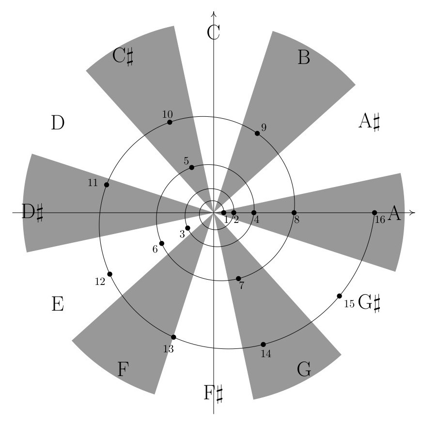
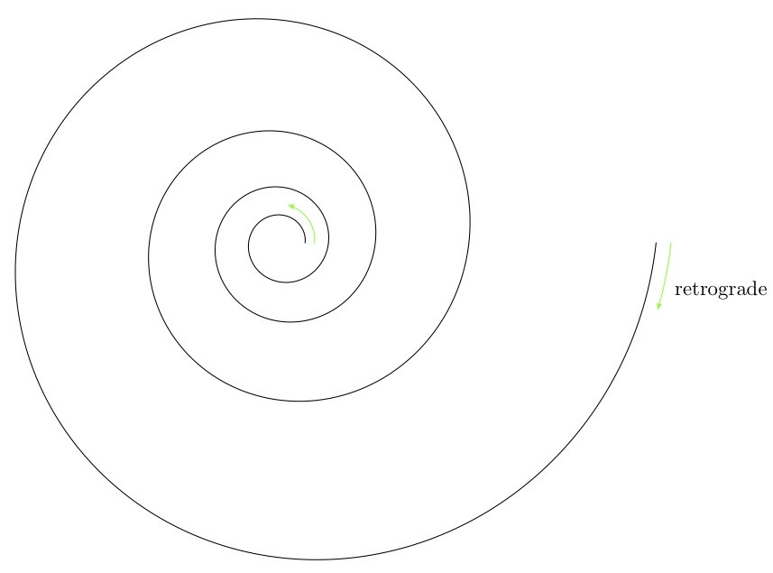

Clifton Callender
composition, music theory, mathematics
Infinite Canons
Infinite Canons is an ongoing series of canons with infinite solutions. More specifically, each canon is based on a melodic line that can be combined in any number of voices, in any tempo ratios (rational or irrational), and with each voice moving either forward or backward through the line, while maintaining harmonic consistency.
Below is a brief explanation, stemming from a talk given at the Nancarrow in the 21st Century Conference at the Southbank Centre in London, of how these canons work. This includes a few suggestive realizations of two different infinite canons. Soon to come are more thorough descriptions of these canons and the underlying process in published form and an interactive program that allows users to explore an unlimited number of realizations of these pieces.
Introduction
One of Nancarrow’s more curious works is Study No. 44, which Kyle Gann calls the “Aleatory Canon.” The canon is for two voices in any tempo ratio. (Each voice of the canon is played on a different piano using a separate roll.) Nancarrow maintains global harmonic control by keeping his materials very simple. (The two voices combined mostly stay within a single diatonic collection.) However, local harmonic details are essentially unplanned, since the exact alignment of the two canonic voices is unknowable ahead of time.
Is it possible to create an aleatoric canon while maintaining control of local-level harmonic details? Surprisingly, the answer is yes! The key is that the canonic line must be maximally self similar; that is, the melody must be self similar at all possible time scales.
Tom Johnson’s La vie est si courte is an example of self similarity at a single time scale.
Tom Johnson’s La vie est si courte is self similar at the ratio 3:1.
The lower line is the same as the upper line played three times as slow. Note that beginning of every note in the lower line forms an octave with the upper line. So the melody of La vie est si courte is self similar at the ratio of 3:1. Equivalently, the melody gives rise to a 3:1 tempo canon that exhibits maximal harmonic consistency—a series of parallel octaves.
We can enhance the independence of the two lines while obscuring the melody’s self-similar structure by transposing one of the voices. For instance, transposing the upper line of this 3:1 tempo canon up a diatonic third (assuming an implicit key signature of one sharp) yields a series of parallel tenths.
Tom Johnson’s La vie est si courte. Here the self-similarity is manifest as a 3:1 tempo canon where simultaneous attacks form a series of parallel tenths.
Johnson, Emmanuel Amiot, and others have written about self-similar melodies at finite times scales, but this will not help us to construct a harmonically consistent aleatoric canon. An example of exactly the kind of maximally self-similar musical structure that we are looking for is the harmonic series:
The harmonic series is self-similar at all possible rational ratios and is thus maximally self similar.
The top line gives the first eighteen overtones of a low A fundamental. Taking every second overtone yields the harmonic series in the middle line, which is one octave higher. Taking every third overtone yields the harmonic series in the bottom line, which one octave and a perfect fifth higher. And so forth. Usually the overtones occur simultaneously as part of a single complex tone and the maximally self similarity is made manifest by the various natural harmonics obtainable on a given fundamental. However, if we play the harmonics in a sequence, as in the figure above, the result is a tempo canon that maintains maximal harmonic consistency via parallel unisons. As before, we can enhance the independence of the lines with transpositions that yield parallel intervals other than the unison or octave. For example, we can transpose the three lines so that they create a series of parallel chords of stacked fifths (or subsets of this chord):

The harmonic series as a 3:2:1 tempo canon where the simultaneous attacks form a series of parallel stacked-fifth chords (or subsets forming a perfect fifth or major ninth).
The harmonic series and its approximation in equal temperament can be usefully represented by the logarithmic spiral, $r^{\theta/2\pi}$:

Harmonic series plotted on the logarithmic spiral, $r^{\theta/2\pi}$, and approximated by the chromatic scale.
$r$ is the distance of the spiral from the origin and integer values of $r$ (the labeled points) correspond to successive harmonics (integer multiples of a fundamental frequency). The space is divided into 12 equivalent regions, each corresponding to a consecutive member of the chromatic scale. Each harmonic is associated with the pitch of the region in which the point is located, yielding the typical approximation in equal temperament of a harmonic series on A: harmonic 1 is A, harmonic 2 is A, harmonic 3 is E, harmonic 4 is A, harmonic 5 is C#, and so forth.
The key to creating maximally self-similar melodies is to apply this abstract structure to different harmonic cycles.
Abstract structure for maximally self-similar canon lines.
$r$ corresponds to beats, phase corresponds to position along a cycle of pitches or chords dividing the space into equivalent regions, and each beat is associated with the pitch or chord of the region in which it is contained. What follows are examples drawn from two different harmonic cycles: diatonic thirds and the circle-of-fifths.
Example 1: Diatonic thirds
In the first example a series of ascending diatonic thirds in B harmonic minor—F# A# C# E G B D—is repeated eight times yielding a cycle of 56 diatonic thirds.
Beats 1–16 (a) and 16–128 (b) represented by the logarithmic spiral against a background harmonic cycle of 56 diatonic thirds. Associating beats with the region in which they are contained yields a sequence of 128 pitches.
Each region is color coded for a specific pitch class. Beats 1–128 are represented by the logarithmic spiral, and associating beats with the region in which they are contained yields the following sequence of pitches classes:
The 128-beat sequence resulting from a logarithmic sampling of a cycle of 56 ascending diatonic thirds. Note that the many repeated notes near the end result from having a single region sampled twice in a row.
Turning this sequence of pitch classes into an actual melody proceeds by several steps. First, the sequence is reversed, so that all of the voices converge at the end of the canon rather than the beginning. (The convergence itself occurs at beat 0, which is added at the end of the sequence below.) Second, the many repeated notes that occur in the higher numbered beats of the sequence are embellished with passing or incomplete-neighbor tones, indicated below by diamond note heads.
Sequence is reversed so that the canonic voices converge at the end of the line. This convergence is marked by the added breve (F#) at the end, which functions as beat 0. Passing and incomplete-neighbor tones (indicated with diamond note heads) are substituted when a single region is sampled twice in a row.
Finally, some notes of the sequence are muted by a rest or by having a previous note sustain for longer than a single beat. Octave displacements are used to create a more melodic contour and to obscure the listener’s perception of the underlying self similarity. (My own experience is that the more easily I can perceive the self similarity, the less convinced I am by the independence of voices in the tempo canon.)
Finally, some notes of the sequence are muted by a rest or by the sustain of a previous note. Octave displacements are used to create a more melodic contour and to disguise the underlying self similarity.
While its underlying structure is effectively hidden, the derivation of this melody ensures its maximal self similarity and ability to maintain maximal harmonic consistency when combined at all possible tempo ratios. Below are three different canons on the same melody, each with a different set of tempo ratios. In each case notes that begin together form a consistent consonant interval, as do most of the notes in between these coincident attacks. The other intervals that occur are also either consonances or dissonances that are, for the most part, treated according to the traditional rules of counterpoint, lending these canons a strikingly tonal and traditional sound, despite the rhythmic complexities.
The first example of this line in canon is a relatively straightforward three-voice canon in the ratios 1:2:4. The slowest voice enters alone, while the second voice enters halfway through the canon moving twice as fast. (More generally, if a voice is moving $x$ times as fast the initial voice, it will enter $(x-1)/x$ of the way through the initial voice’s statement of the canon in order to converge at the end.) The third voice enters three fourths of the way through the first voice’s statement of the canon moving four times as fast. The voices are transposed diatonically so that simultaneities always form a root-position triad (or subset). Because the underlying collection is the harmonic minor scale, the quality of these triads may be major, minor, diminished, or augmented. Additional, the first note of each voice is anticipated by four beats (measured in quarters, eighths, or sixteenths depending on the speed of the voice) giving a nice implied V9 with the entrance of the third voice.
Canon 1:2:4
The second example is a two-voice canon in the ratio 2:3. The second voice enters one third of the way through the initial voice’s statement moving 1.5 times as fast. Notes that begin together form a tenth (plus an octave). Notes that begin nearly simultaneously typically form a consonant tenth or a twelfth.1
Canon 2:3
While the examples so far have been consonant, it is also possible for each of these canons to be consistently dissonant by transposing the lines to yield a series of parallel dissonances. For instance, transposing the upper line of the previous example down a step will yield a 2:3 canon where the predominant interval is the ninth, a clearly audible difference from the consonant rendition.
Canon 2:3 (dissonant version)
The final example is a two-voice canon in the ratio 5:7. The predominant harmonic interval in this example is the sixth.
Canon 5:7
Example 2: Circle-of-fifths
The second group of examples sounds very different from the first, but still shares the same underlying structure. In this case, the background harmonic cycle is a sequence of perfect fifths. (See below.) Superimposed on this cycle is a logarithmic spiral ($r=2^{\theta/\frac{3\pi}{2}}$) in which $r$ doubles with every three quarters of a turn rather than with every complete turn. Taking the integer values of $r$ between six and twelve, the corresponding notes are C – D – E – B – C# – Ab, which form the beginning of the derived melody. For the remainder of this melody, the intervals are embellished in a more typically musical manner, with seconds being divided into fifths, fifths into thirds, thirds into seconds, and seconds again being divided into fifths.

(a) Beats represented by a logarithmic spiral against a background harmonic cycle of perfect fifths. Beats six through twelve yield the sequence C – D – E – B – C# – Ab. (b) Progressive embellishment of the intervals associated with beats six through twelve.
The resulting melody is shown below. Over the duration of each half line, the tempo increases by a factor of two, so that while there are six notes in the first half of the first line, there are 12 in the second half, 24 in the first half of the second line, and 48 in the second half of the second line. (The absolute length of each note on the page corresponds to its absolute sounding duration.) This is a very salient difference in presentation of the self similar structure. In the examples of the previous section, the tempo remained constant while the background harmonic cycle varied with respect to time. In the examples of this section, it is the background that moves at a fixed rate, while the tempo varies. Though the underlying structure is the same, the melodies seem to have very little in common.
By the midpoint of the second line, the melody is moving eight times as fast as the beginning. Over the last quarter of the melodic line, every eighth note remains at a constant volume while all other notes fade out, gradually revealing the opening of the melody moving at the same tempo transposed down a minor third. The portion of the line between the repeat signs can thus repeat ad infinitum, down a minor third with each repetition.
Canon line resulting from beats six through twelve and the diminution process shown in the figure immediately above.
We begin again with a relatively straightforward three-voice canon in the ratios 4:2:1 where notes starting simultaneously always form a root-position triad. In this case the fastest voice begins alone. Since the canon line is accelerating, the second voice enters once the first voices has accelerated by a factor of two, which occurs halfway through the first line of the melody above. Similarly, the third voice will enter when the first voice has accelerated by a factor of four, which occurs at the end of the first line of the melody. Since the acceleration of each voice is exponential, the time delay between voices remains constant even though the voices are in different tempos.
Canon 4:2:1
Next is a 9:6:4 canon where the predominant interval is a chord of stacked fifths.
Canon 9:6:4
So far, all of the examples have been based on rational ratios. However, these canons work just as well with irrational tempo ratios. Below is a three-voice canon in the ratios $\pi:e:1$, in which theoretically no notes will begin simultaneously. (Practically speaking, some notes will begin close enough to be perceived as simultaneous.) In this case, the predominant chord is again the root-position triad. What this means is that the closer two notes are to beginning simultaneously, the more likely they are to form part of a triad. Simultaneously sounding notes in which the attacks are farther apart may form various kinds of incomplete diatonic seventh and ninth chords. Since each voice is progressively elaborating the same cycle of ascending fifths in a diatonic manner, the voices will always “agree” as to the prevailing diatonic collection, even as this collection smoothly passes through all of its twelve transpositions.
Canon $\pi:e:1$
As a happy byproduct of maximal self similarity, these melodies can combine with their retrograde inversions in an infinite number of ways as well. Consider the figure below. If the original melody moves along the logarithmic spiral from the center out in the counterclockwise direction, then the retrograde of the melody will move from the outside toward the center in the clockwise direction. The original melody cannot be combined with its retrograde because the two are moving in opposite directions through the harmonic cycle; e.g., if the original moves through the ascending circle-of-fifths, then its retrograde will move through the descending circle-of-fifths, and we will be unable to maintain harmonic consistency.

The retrograde of the original theme moves in the opposite direction through the harmonic cycle.
Similarly, the inversion of the original melody will proceed in the opposite direction. We can represent the inversion by inverting the spiral about the x-axis, shown in the figure below by the blue spiral, where the inversion of the melody would move from the center out in the clockwise direction. However, as shown in the figure, the retrograde-inversion moves in the clockwise direction and thus moves in the same direction through the harmonic cycle as the original melody; e.g., if the melody moves through an ascending circle-of-fifths, then its retrograde inversion will also move through the ascending circle-of-fifths.
The retrograde-inversion of the original theme moves in the same direction through the harmonic cycle.
We conclude with a couple of examples featuring the original melody with its retrograde, also known as a table canon. In the first table canon, the two forms of the melody begin and end together in a two-voice table canon. However, the original version continually accelerates while the retrograde inversion continually decelerates. Throughout the predominant interval is the tenth.
Table canon (canon by retrograde inversion)
Our final canon is a six-voice table canon which combines a three-voice canon in the ratios 28:24:21 with its three-voice retrograde inversion. Within each of the three-voice canons the predominant interval is the octave while between the retrograde inversions the primary interval is the tenth. Thus this canon sounds like a texturally enriched version of the preceding canon.
Table canon 28:24:21
1 The convergence at the end of the canon is a sixth instead of a tenth. This is because the interval at “beat 0” is determined by the transposition of the voices relative to one another. Since the upper voice is transposed up a sixth (or down a third) to start on D instead of F#, the interval at the convergence is a sixth.. ↩